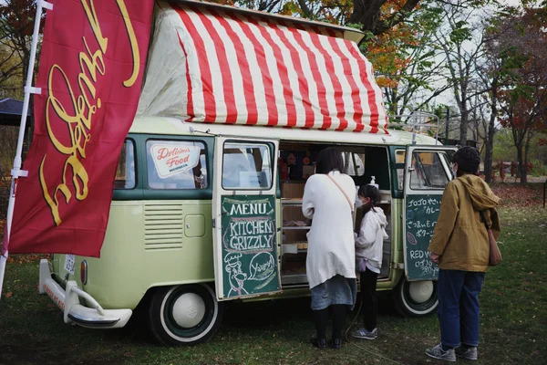

Film light leaks for your RICOH GR. No firmware flashing.
An unofficial module written to your SD card. Tested on the RICOH GR III with firmware 2.10. Applies to JPEGs and previews without changing RAW files.


Strength
Choose how much light enters the frame. Try Slit Flare at three strengths on the same photo.


The looks above use Medium strength, Original position and Variation 1.
More controls
RightLeak Position
Choose the edge the light enters from. Original uses each look’s default side.
Variation 1Variation
Change the shape and colors without switching styles. Variation 1 is the original look.
On the camera


Before you install
Is Light Leak part of GRKit?
No. It is a separate, unofficial module. A compatible GRKit runtime must already be installed.
Which cameras have been tested?
The module was tested on the RICOH GR III with firmware 2.10. The GR IIIx used for the sample photo and other models have not been tested with the module.
Does it change RAW files?
No. Light Leak is written to the JPEG and its previews, not to the RAW sensor data.
Can I see the effect before shooting?
No. The viewfinder icon indicates the active style, but the effect itself appears only in the recorded JPEG and its previews.
Where do I put LITLEAK.GRM?
Copy it to GRKIT/MODULES/LITLEAK.GRM from the root of the SD card.
How do I remove it?
Turn your camera off and remove GRKIT/MODULES/LITLEAK.GRM from the card. You do not need to flash the firmware.
Safe to try
No firmware flashing
The module loads from the SD card. The camera firmware stays as it is.
Easy to remove
Delete the module file from the card to uninstall Light Leak.
RAW files stay intact
The effect is applied only to JPEGs and previews.